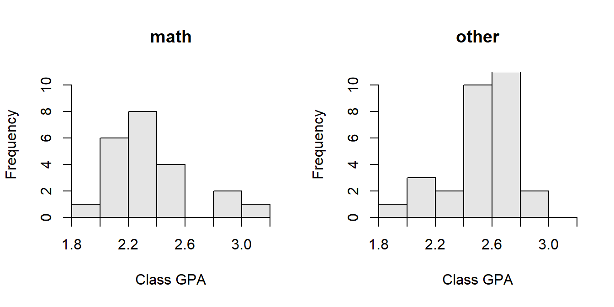
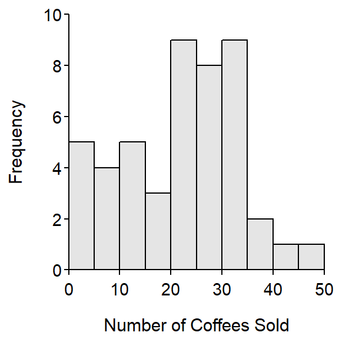
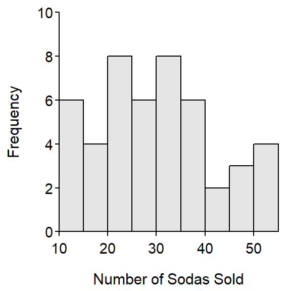

The distribution of commute times is approximately symmetric with no outliers (Figure 1). The center as measured by the mean is 23.75 mins and the disperision as measured by the standard deviation is 3.54 mins (Table 1). The mean and standard deviation were used because the distribution was symmetric and no outliers were present.
The distribution of post-molt carapace lengths for Dungeness Crabas is strongly left-skewed with two outliers between 38.8 and 60 mm (Figure 2). The center as measured by the median is 147.4 mm and the dispersion as measured by the IQR is from a Q1 of 138.0 to a Q3 of 153.4 mm (Table 2). The median and IQR were used because the distribution was strongly skewed and outliers were present.
Figure 1: Histogram of the diameter (cm) of coarse woody debris in Allequash Lake, WI.
Table 1: Summary statistics for the diameter (cm) of coarse woody debris in Allequash Lake, WI.
n mean sd min Q1 median Q3 max
50.00 19.54 4.94 15.00 16.25 18.00 20.75 34.00 Figure 2: Histogram of the diameter (cm) of coarse woody debris in Allequash Lake, WI separated by exposure category.
Table 2: Summary statistics for the diameter (cm) of coarse woody debris in Allequash Lake, WI separated by exposure category.
exposure n mean sd min Q1 median Q3 max
1 low 9 22.11 7.37 16 16 19 24 34
2 med 41 18.98 4.15 15 17 18 20 34R Appendix.
d <- read.csv("cwd.csv")
hist(~diameter,data=d,xlab="Diameter of CWD")
Summarize(~diameter,data=d,digits=2)
hist(diameter~exposure,data=d,xlab="Diameter of CWD")
Summarize(diameter~exposure,data=d,digits=2)The distribution of GPA for the math classes is slightly right-skewed with no obvious outliers (Figure 4). The median for the math courses is 2.30 with an IQR from a Q1 of 2.165 to a Q3 of 2.445 (Table 4). The median and IQR were used because of the skewness in the data.
The distribution of GPA for the other classes is left-skewed with no obvious outliers (Figure 4). The median for the other courses is 2.54 with an IQR from a Q1 of 2.440 to a Q3 of 2.620 (Table 4). The median and IQR were used because of the skewness in the data.

Figure 4: Histograms of class gpa for math (left) and other (right) courses at the University of North Carolina.
Table 4: Descriptive statistics for class gpa of math and other courses at the University of North Carolina
class.type n mean sd min Q1 median Q3 max
1 math 22 2.353 0.301 1.90 2.165 2.30 2.445 3.02
2 other 29 2.508 0.235 1.96 2.440 2.54 2.620 2.95R Appendix.
setwd("C:/aaaWork/Web/GitHub/NCMTH107/modules/CE/Keys")
d <- read.csv("UNCgrades.csv")
hist(gpa~class.type,data=d,xlab="Class GPA")
Summarize(gpa~class.type,data=d,digits=3)The distribution of BOD values for the private lab is approximately symmetric with no obvious outliers (Figure 3). The mean of the private data is 34.64 mg/L with a standard deviation of 10.45 mg/L (Figure 7). The mean and standard deviation were used because of the symmetry of the distribution and absence of outliers.
The distribution of BOD values for the state lab appears to be right-skewed with an outlier at 71 mg/L (Figure 3). The median of the state data is 20 mg/L with an IQR from 9.5 to 33.5 mg/L (Figure 7). The median and IQR were used because of the presence of the outlier.Figure 3: Histograms for BOD measurements for the private (left) and state (right) labs.
Table 3: Descriptive statistics for BOD measurements for the private and state labs.
lab n mean sd min Q1 median Q3 max
1 private 11 34.6 10.5 15 28.5 35 40.5 54
2 state 11 25.3 19.7 6 9.5 20 33.5 71R Appendix.
setwd("C:/aaaWork/Web/GitHub/NCMTH107/modules/CE/Keys")
d <- read.csv("4_50.csv")
hist(bod~lab,data=d,xlab="BOD Measurements")
Summarize(bod~lab,data=d,digits=1)
Figure 5: Histogram of the number of coffees sold in the college cafe.
Table 5: Summary statistics of the number of coffees sold in the college cafe.
n nvalid mean sd min Q1 median Q3 max
48.00 47.00 21.51 11.08 3.00 12.00 23.00 30.00 48.00 Table 6: Summary statistics of the number of coffees sold in the college cafe separated by day of the week.
dow n nvalid mean sd min Q1 median Q3 max
1 Mon 9 9 19.33 8.63 5 16.00 20.0 25.00 31
2 Tue 10 10 22.80 11.34 6 15.50 22.5 29.75 41
3 Wed 10 10 22.30 14.74 4 10.25 24.0 32.75 48
4 Thu 10 10 22.80 10.41 4 15.00 25.5 30.25 35
5 Fri 9 8 19.75 11.06 3 13.00 23.5 27.75 31
Figure 6: Histogram of the number of sodas sold in the college cafe.
Table 7: Summary statistics of the number of sodas sold in the college cafe.
n nvalid mean sd min Q1 median Q3 max
48.00 47.00 29.57 11.86 11.00 21.00 29.00 36.00 55.00 Table 8: Summary statistics of the number of sodas sold in the college cafe separated by day of the week.
dow n nvalid mean sd min Q1 median Q3 max
1 Mon 9 9 24.00 6.93 13 19.00 25.0 26.00 36
2 Tue 10 10 39.90 11.45 20 33.00 37.5 49.50 55
3 Wed 10 10 28.50 10.97 13 21.00 28.5 34.75 45
4 Thu 10 10 35.30 8.54 23 29.50 34.0 41.50 50
5 Fri 9 8 17.12 5.91 11 12.75 14.5 22.50 26R Appendix.
d <- read.csv("cafedata.csv")
d$dow <- factor(d$dow,levels=c("Mon","Tue","Wed","Thu","Fri"))
hist(~coffee.sold,data=d,xlab="Number of Coffees Sold",ylim=c(0,10))
Summarize(~coffee.sold,data=d,digits=2)
Summarize(coffee.sold~dow,data=d,digits=2)
hist(~sodas.sold,data=d,xlab="Number of Sodas Sold",ylim=c(0,10))
Summarize(~sodas.sold,data=d,digits=2)
Summarize(sodas.sold~dow,data=d,digits=2)